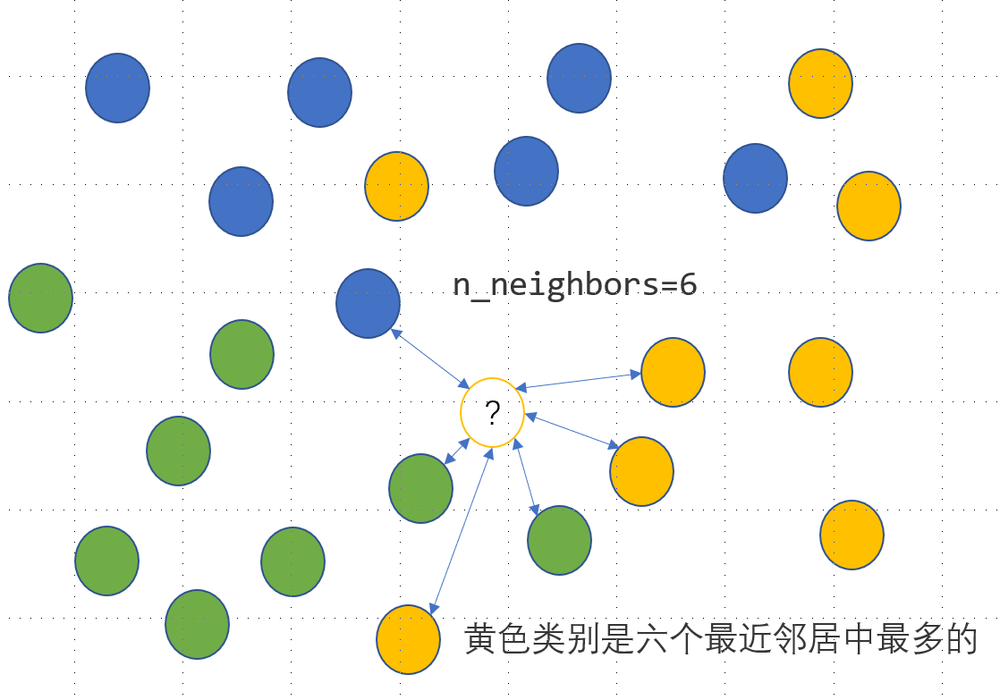

七、缺失数据
一、缺失值的统计和删除
1. 缺失信息的统计
缺失数据可以使用 isna 或 isnull （两个函数没有区别）来查看每个单元格是否缺失，结合 mean 可以计算出每列缺失值的比例：
In [3]: df = pd.read_csv('data/learn_pandas.csv',
...: usecols = ['Grade', 'Name', 'Gender', 'Height',
...: 'Weight', 'Transfer'])
...:
In [4]: df.isna().head()
Out[4]:
Grade Name Gender Height Weight Transfer
0 False False False False False False
1 False False False False False False
2 False False False False False False
3 False False False True False False
4 False False False False False False
In [5]: df.isna().mean() # 查看缺失的比例
Out[5]:
Grade 0.000
Name 0.000
Gender 0.000
Height 0.085
Weight 0.055
Transfer 0.060
dtype: float64
如果想要查看某一列缺失或者非缺失的行，可以利用 Series 上的 isna 或者 notna 进行布尔索引。例如，查看身高缺失的行：
In [6]: df[df.Height.isna()].head()
Out[6]:
Grade Name Gender Height Weight Transfer
3 Sophomore Xiaojuan Sun Female NaN 41.0 N
12 Senior Peng You Female NaN 48.0 NaN
26 Junior Yanli You Female NaN 48.0 N
36 Freshman Xiaojuan Qin Male NaN 79.0 Y
60 Freshman Yanpeng Lv Male NaN 65.0 N
如果想要同时对几个列，检索出全部为缺失或者至少有一个缺失或者没有缺失的行，可以使用 isna, notna 和 any, all 的组合。例如，对身高、体重和转系情况这 3 列分别进行这三种情况的检索：
In [7]: sub_set = df[['Height', 'Weight', 'Transfer']]
In [8]: df[sub_set.isna().all(1)] # 全部缺失
Out[8]:
Grade Name Gender Height Weight Transfer
102 Junior Chengli Zhao Male NaN NaN NaN
In [9]: df[sub_set.isna().any(1)].head() # 至少有一个缺失
Out[9]:
Grade Name Gender Height Weight Transfer
3 Sophomore Xiaojuan Sun Female NaN 41.0 N
9 Junior Juan Xu Female 164.8 NaN N
12 Senior Peng You Female NaN 48.0 NaN
21 Senior Xiaopeng Shen Male 166.0 62.0 NaN
26 Junior Yanli You Female NaN 48.0 N
In [10]: df[sub_set.notna().all(1)].head() # 没有缺失
Out[10]:
Grade Name Gender Height Weight Transfer
0 Freshman Gaopeng Yang Female 158.9 46.0 N
1 Freshman Changqiang You Male 166.5 70.0 N
2 Senior Mei Sun Male 188.9 89.0 N
4 Sophomore Gaojuan You Male 174.0 74.0 N
5 Freshman Xiaoli Qian Female 158.0 51.0 N
2. 缺失信息的删除
数据处理中经常需要根据缺失值的大小、比例或其他特征来进行行样本或列特征的删除， pandas 中提供了 dropna 函数来进行操作。
dropna 的主要参数为轴方向 axis （默认为 0，即删除行）、删除方式 how 、删除的非缺失值个数阈值 thresh （ 非缺失值 没有达到这个数量的相应维度会被删除）、备选的删除子集 subset ，其中 how 主要有 any 和 all 两种参数可以选择。
例如，删除身高体重至少有一个缺失的行：
In [11]: res = df.dropna(how = 'any', subset = ['Height', 'Weight'])
In [12]: res.shape
Out[12]: (174, 6)
例如，删除超过 15 个缺失值的列：
In [13]: res = df.dropna(1, thresh=df.shape[0]-15) # 身高被删除
In [14]: res.head()
Out[14]:
Grade Name Gender Weight Transfer
0 Freshman Gaopeng Yang Female 46.0 N
1 Freshman Changqiang You Male 70.0 N
2 Senior Mei Sun Male 89.0 N
3 Sophomore Xiaojuan Sun Female 41.0 N
4 Sophomore Gaojuan You Male 74.0 N
当然，不用 dropna 同样是可行的，例如上述的两个操作，也可以使用布尔索引来完成：
In [15]: res = df.loc[df[['Height', 'Weight']].notna().all(1)]
In [16]: res.shape
Out[16]: (174, 6)
In [17]: res = df.loc[:, ~(df.isna().sum()>15)]
In [18]: res.head()
Out[18]:
Grade Name Gender Weight Transfer
0 Freshman Gaopeng Yang Female 46.0 N
1 Freshman Changqiang You Male 70.0 N
2 Senior Mei Sun Male 89.0 N
3 Sophomore Xiaojuan Sun Female 41.0 N
4 Sophomore Gaojuan You Male 74.0 N
二、缺失值的填充和插值
1. 利用 fillna 进行填充
在 fillna 中有三个参数是常用的： value, method, limit 。其中， value 为填充值，可以是标量，也可以是索引到元素的字典映射； method 为填充方法，有用前面的元素填充 ffill 和用后面的元素填充 bfill 两种类型， limit 参数表示连续缺失值的最大填充次数。
下面构造一个简单的 Series 来说明用法：
In [19]: s = pd.Series([np.nan, 1, np.nan, np.nan, 2, np.nan],
....: list('aaabcd'))
....:
In [20]: s
Out[20]:
a NaN
a 1.0
a NaN
b NaN
c 2.0
d NaN
dtype: float64
In [21]: s.fillna(method='ffill') # 用前面的值向后填充
Out[21]:
a NaN
a 1.0
a 1.0
b 1.0
c 2.0
d 2.0
dtype: float64
In [22]: s.fillna(method='ffill', limit=1) # 连续出现的缺失，最多填充一次
Out[22]:
a NaN
a 1.0
a 1.0
b NaN
c 2.0
d 2.0
dtype: float64
In [23]: s.fillna(s.mean()) # value为标量
Out[23]:
a 1.5
a 1.0
a 1.5
b 1.5
c 2.0
d 1.5
dtype: float64
In [24]: s.fillna({'a': 100, 'd': 200}) # 通过索引映射填充的值
Out[24]:
a 100.0
a 1.0
a 100.0
b NaN
c 2.0
d 200.0
dtype: float64
有时为了更加合理地填充，需要先进行分组后再操作。例如，根据年级进行身高的均值填充：
In [25]: df.groupby('Grade')['Height'].transform(
....: lambda x: x.fillna(x.mean())).head()
....:
Out[25]:
0 158.900000
1 166.500000
2 188.900000
3 163.075862
4 174.000000
Name: Height, dtype: float64
练一练
对一个序列以如下规则填充缺失值：如果单独出现的缺失值，就用前后均值填充，如果连续出现的缺失值就不填充，即序列 [1, NaN, 3, NaN, NaN] 填充后为[1, 2, 3, NaN, NaN]，请利用 fillna 函数实现。（提示：利用 limit 参数）
2. 插值函数
在关于 interpolate 函数的 文档 描述中，列举了许多插值法，包括了大量 Scipy 中的方法。由于很多插值方法涉及到比较复杂的数学知识，因此这里只讨论比较常用且简单的三类情况，即线性插值、最近邻插值和索引插值。
对于 interpolate 而言，除了插值方法（默认为 linear 线性插值）之外，有与 fillna 类似的两个常用参数，一个是控制方向的 limit_direction ，另一个是控制最大连续缺失值插值个数的 limit 。其中，限制插值的方向默认为 forward ，这与 fillna 的 method 中的 ffill 是类似的，若想要后向限制插值或者双向限制插值可以指定为 backward 或 both 。
In [26]: s = pd.Series([np.nan, np.nan, 1,
....: np.nan, np.nan, np.nan,
....: 2, np.nan, np.nan])
....:
In [27]: s.values
Out[27]: array([nan, nan, 1., nan, nan, nan, 2., nan, nan])
例如，在默认线性插值法下分别进行 backward 和双向限制插值，同时限制最大连续条数为 1：
In [28]: res = s.interpolate(limit_direction='backward', limit=1)
In [29]: res.values
Out[29]: array([ nan, 1. , 1. , nan, nan, 1.75, 2. , nan, nan])
In [30]: res = s.interpolate(limit_direction='both', limit=1)
In [31]: res.values
Out[31]: array([ nan, 1. , 1. , 1.25, nan, 1.75, 2. , 2. , nan])
第二种常见的插值是最近邻插补，即缺失值的元素和离它最近的非缺失值元素一样：
最后来介绍索引插值，即根据索引大小进行线性插值。例如，构造不等间距的索引进行演示：
In [33]: s = pd.Series([0,np.nan,10],index=[0,1,10])
In [34]: s
Out[34]:
0 0.0
1 NaN
10 10.0
dtype: float64
In [35]: s.interpolate() # 默认的线性插值，等价于计算中点的值
Out[35]:
0 0.0
1 5.0
10 10.0
dtype: float64
In [36]: s.interpolate(method='index') # 和索引有关的线性插值，计算相应索引大小对应的值
Out[36]:
0 0.0
1 1.0
10 10.0
dtype: float64
同时，这种方法对于时间戳索引也是可以使用的，有关时间序列的其他话题会在第十章进行讨论，这里举一个简单的例子：
In [37]: s = pd.Series([0,np.nan,10],
....: index=pd.to_datetime(['20200101',
....: '20200102',
....: '20200111']))
....:
In [38]: s
Out[38]:
2020-01-01 0.0
2020-01-02 NaN
2020-01-11 10.0
dtype: float64
In [39]: s.interpolate()
Out[39]:
2020-01-01 0.0
2020-01-02 5.0
2020-01-11 10.0
dtype: float64
In [40]: s.interpolate(method='index')
Out[40]:
2020-01-01 0.0
2020-01-02 1.0
2020-01-11 10.0
dtype: float64
关于 polynomial 和 spline 插值的注意事项
在 interpolate 中如果选用 polynomial 的插值方法，它内部调用的是 scipy.interpolate.interp1d(*,*,kind=order) ，这个函数内部调用的是 make_interp_spline 方法，因此其实是样条插值而不是类似于 numpy 中的 polyfit 多项式拟合插值；而当选用 spline 方法时， pandas 调用的是 scipy.interpolate.UnivariateSpline 而不是普通的样条插值。这一部分的文档描述比较混乱，而且这种参数的设计也是不合理的，当使用这两类插值方法时，用户一定要小心谨慎地根据自己的实际需求选取恰当的插值方法。
三、Nullable 类型
1. 缺失记号及其缺陷
在 python 中的缺失值用 None 表示，该元素除了等于自己本身之外，与其他任何元素不相等：
In [41]: None == None
Out[41]: True
In [42]: None == False
Out[42]: False
In [43]: None == []
Out[43]: False
In [44]: None == ''
Out[44]: False
在 numpy 中利用 np.nan 来表示缺失值，该元素除了不和其他任何元素相等之外，和自身的比较结果也返回 False ：
In [45]: np.nan == np.nan
Out[45]: False
In [46]: np.nan == None
Out[46]: False
In [47]: np.nan == False
Out[47]: False
值得注意的是，虽然在对缺失序列或表格的元素进行比较操作的时候， np.nan 的对应位置会返回 False ，但是在使用 equals 函数进行两张表或两个序列的相同性检验时，会自动跳过两侧表都是缺失值的位置，直接返回 True ：
In [48]: s1 = pd.Series([1, np.nan])
In [49]: s2 = pd.Series([1, 2])
In [50]: s3 = pd.Series([1, np.nan])
In [51]: s1 == 1
Out[51]:
0 True
1 False
dtype: bool
In [52]: s1.equals(s2)
Out[52]: False
In [53]: s1.equals(s3)
Out[53]: True
在时间序列的对象中， pandas 利用 pd.NaT 来指代缺失值，它的作用和 np.nan 是一致的（时间序列的对象和构造将在第十章讨论）：
In [54]: pd.to_timedelta(['30s', np.nan]) # Timedelta中的NaT
Out[54]: TimedeltaIndex(['0 days 00:00:30', NaT], dtype='timedelta64[ns]', freq=None)
In [55]: pd.to_datetime(['20200101', np.nan]) # Datetime中的NaT
Out[55]: DatetimeIndex(['2020-01-01', 'NaT'], dtype='datetime64[ns]', freq=None)
那么为什么要引入 pd.NaT 来表示时间对象中的缺失呢？仍然以 np.nan 的形式存放会有什么问题？在 pandas 中可以看到 object 类型的对象，而 object 是一种混杂对象类型，如果出现了多个类型的元素同时存储在 Series 中，它的类型就会变成 object 。例如，同时存放整数和字符串的列表：
NaT 问题的根源来自于 np.nan 的本身是一种浮点类型，而如果浮点和时间类型混合存储，如果不设计新的内置缺失类型来处理，就会变成含糊不清的 object 类型，这显然是不希望看到的。
同时，由于 np.nan 的浮点性质，如果在一个整数的 Series 中出现缺失，那么其类型会转变为 float64 ；而如果在一个布尔类型的序列中出现缺失，那么其类型就会转为 object 而不是 bool ：
In [58]: pd.Series([1, np.nan]).dtype
Out[58]: dtype('float64')
In [59]: pd.Series([True, False, np.nan]).dtype
Out[59]: dtype('O')
因此，在进入 1.0.0 版本后， pandas 尝试设计了一种新的缺失类型 pd.NA 以及三种 Nullable 序列类型来应对这些缺陷，它们分别是 Int, boolean 和 string 。
2. Nullable 类型的性质
从字面意义上看 Nullable 就是可空的，言下之意就是序列类型不受缺失值的影响。例如，在上述三个 Nullable 类型中存储缺失值，都会转为 pandas 内置的 pd.NA ：
In [60]: pd.Series([np.nan, 1], dtype = 'Int64') # "i"是大写的
Out[60]:
0 <NA>
1 1
dtype: Int64
In [61]: pd.Series([np.nan, True], dtype = 'boolean')
Out[61]:
0 <NA>
1 True
dtype: boolean
In [62]: pd.Series([np.nan, 'my_str'], dtype = 'string')
Out[62]:
0 <NA>
1 my_str
dtype: string
在 Int 的序列中，返回的结果会尽可能地成为 Nullable 的类型：
In [63]: pd.Series([np.nan, 0], dtype = 'Int64') + 1
Out[63]:
0 <NA>
1 1
dtype: Int64
In [64]: pd.Series([np.nan, 0], dtype = 'Int64') == 0
Out[64]:
0 <NA>
1 True
dtype: boolean
In [65]: pd.Series([np.nan, 0], dtype = 'Int64') * 0.5 # 只能是浮点
Out[65]:
0 <NA>
1 0.0
dtype: Float64
对于 boolean 类型的序列而言，其和 bool 序列的行为主要有两点区别：
第一点是带有缺失的布尔列表无法进行索引器中的选择，而 boolean 会把缺失值看作 False ：
In [66]: s = pd.Series(['a', 'b'])
In [67]: s_bool = pd.Series([True, np.nan])
In [68]: s_boolean = pd.Series([True, np.nan]).astype('boolean')
# s[s_bool] # 报错
In [69]: s[s_boolean]
Out[69]:
0 a
dtype: object
第二点是在进行逻辑运算时， bool 类型在缺失处返回的永远是 False ，而 boolean 会根据逻辑运算是否能确定唯一结果来返回相应的值。那什么叫能否确定唯一结果呢？举个简单例子： True | pd.NA 中无论缺失值为什么值，必然返回 True ； False | pd.NA 中的结果会根据缺失值取值的不同而变化，此时返回 pd.NA ； False & pd.NA 中无论缺失值为什么值，必然返回 False 。
In [70]: s_boolean & True
Out[70]:
0 True
1 <NA>
dtype: boolean
In [71]: s_boolean | True
Out[71]:
0 True
1 True
dtype: boolean
In [72]: ~s_boolean # 取反操作同样是无法唯一地判断缺失结果
Out[72]:
0 False
1 <NA>
dtype: boolean
关于 string 类型的具体性质将在下一章文本数据中进行讨论。
一般在实际数据处理时，可以在数据集读入后，先通过 convert_dtypes 转为 Nullable 类型：
In [73]: df = pd.read_csv('data/learn_pandas.csv')
In [74]: df = df.convert_dtypes()
In [75]: df.dtypes
Out[75]:
School string
Grade string
Name string
Gender string
Height Float64
Weight Int64
Transfer string
Test_Number Int64
Test_Date string
Time_Record string
dtype: object
3. 缺失数据的计算和分组
当调用函数 sum, prod 使用加法和乘法的时候，缺失数据等价于被分别视作 0 和 1，即不改变原来的计算结果：
In [76]: s = pd.Series([2,3,np.nan,4,5])
In [77]: s.sum()
Out[77]: 14.0
In [78]: s.prod()
Out[78]: 120.0
当使用累计函数时，会自动跳过缺失值所处的位置：
当进行单个标量运算的时候，除了 np.nan ** 0 和 1 ** np.nan 这两种情况为确定的值之外，所有运算结果全为缺失（ pd.NA 的行为与此一致 ），并且 np.nan 在比较操作时一定返回 False ，而 pd.NA 返回 pd.NA ：
In [80]: np.nan == 0
Out[80]: False
In [81]: pd.NA == 0
Out[81]: <NA>
In [82]: np.nan > 0
Out[82]: False
In [83]: pd.NA > 0
Out[83]: <NA>
In [84]: np.nan + 1
Out[84]: nan
In [85]: np.log(np.nan)
Out[85]: nan
In [86]: np.add(np.nan, 1)
Out[86]: nan
In [87]: np.nan ** 0
Out[87]: 1.0
In [88]: pd.NA ** 0
Out[88]: 1
In [89]: 1 ** np.nan
Out[89]: 1.0
In [90]: 1 ** pd.NA
Out[90]: 1
另外需要注意的是， diff, pct_change 这两个函数虽然功能相似，但是对于缺失的处理不同，前者凡是参与缺失计算的部分全部设为了缺失值，而后者缺失值位置会被设为 0% 的变化率：
In [91]: s.diff()
Out[91]:
0 NaN
1 1.0
2 NaN
3 NaN
4 1.0
dtype: float64
In [92]: s.pct_change()
Out[92]:
0 NaN
1 0.500000
2 0.000000
3 0.333333
4 0.250000
dtype: float64
对于一些函数而言，缺失可以作为一个类别处理，例如在 groupby, get_dummies 中可以设置相应的参数来进行增加缺失类别：
In [93]: df_nan = pd.DataFrame({'category':['a','a','b',np.nan,np.nan],
....: 'value':[1,3,5,7,9]})
....:
In [94]: df_nan
Out[94]:
category value
0 a 1
1 a 3
2 b 5
3 NaN 7
4 NaN 9
In [95]: df_nan.groupby('category',
....: dropna=False)['value'].mean() # pandas版本大于1.1.0
....:
Out[95]:
category
a 2
b 5
NaN 8
Name: value, dtype: int64
In [96]: pd.get_dummies(df_nan.category, dummy_na=True)
Out[96]:
a b NaN
0 1 0 0
1 1 0 0
2 0 1 0
3 0 0 1
4 0 0 1
四、练习
Ex1：缺失值与类别的相关性检验
在数据处理中，含有过多缺失值的列往往会被删除，除非缺失情况与标签强相关。下面有一份关于二分类问题的数据集，其中 X_1, X_2 为特征变量， y 为二分类标签。
In [97]: df = pd.read_csv('data/missing_chi.csv')
In [98]: df.head()
Out[98]:
X_1 X_2 y
0 NaN NaN 0
1 NaN NaN 0
2 NaN NaN 0
3 43.0 NaN 0
4 NaN NaN 0
In [99]: df.isna().mean()
Out[99]:
X_1 0.855
X_2 0.894
y 0.000
dtype: float64
In [100]: df.y.value_counts(normalize=True)
Out[100]:
0 0.918
1 0.082
Name: y, dtype: float64
事实上，有时缺失值出现或者不出现本身就是一种特征，并且在一些场合下可能与标签的正负是相关的。关于缺失出现与否和标签的正负性，在统计学中可以利用卡方检验来断言它们是否存在相关性。按照特征缺失的正例、特征缺失的负例、特征不缺失的正例、特征不缺失的负例，可以分为四种情况，设它们分别对应的样例数为 。假若它们是不相关的，那么特征缺失中正例的理论值，就应该接近于特征缺失总数 总体正例的比例，即：
其他的三种情况同理。现将实际值和理论值分别记作 ，那么希望下面的统计量越小越好，即代表实际值接近不相关情况的理论值：
可以证明上面的统计量近似服从自由度为 的卡方分布，即 。因此，可通过计算 的概率来进行相关性的判别，一般认为当此概率小于 时缺失情况与标签正负存在相关关系，即不相关条件下的理论值与实际值相差较大。
上面所说的概率即为统计学上关于 列联表检验问题的 值， 它可以通过 scipy.stats.chi2.sf(S, 1) 得到。请根据上面的材料，分别对 X_1, X_2 列进行检验。
Ex2：用回归模型解决分类问题
KNN 是一种监督式学习模型，既可以解决回归问题，又可以解决分类问题。对于分类变量，利用 KNN 分类模型可以实现其缺失值的插补，思路是度量缺失样本的特征与所有其他样本特征的距离，当给定了模型参数 n_neighbors=n 时，计算离该样本距离最近的 个样本点中最多的那个类别，并把这个类别作为该样本的缺失预测类别，具体如下图所示，未知的类别被预测为黄色：

上面有色点的特征数据提供如下：
In [101]: df = pd.read_excel('data/color.xlsx')
In [102]: df.head(3)
Out[102]:
X1 X2 Color
0 -2.5 2.8 Blue
1 -1.5 1.8 Blue
2 -0.8 2.8 Blue
已知待预测的样本点为 ，那么预测类别可以如下写出：
In [103]: from sklearn.neighbors import KNeighborsClassifier
In [104]: clf = KNeighborsClassifier(n_neighbors=6)
In [105]: clf.fit(df.iloc[:,:2].values, df.Color.values)
Out[105]: KNeighborsClassifier(n_neighbors=6)
In [106]: clf.predict([[0.8, -0.2]])
Out[106]: array(['Yellow'], dtype=object)
-
对于回归问题而言，需要得到的是一个具体的数值，因此预测值由最近的 个样本对应的平均值获得。请把上面的这个分类问题转化为回归问题，仅使用
KNeighborsRegressor来完成上述的KNeighborsClassifier功能。 -
请根据第 1 问中的方法，对
audit数据集中的Employment变量进行缺失值插补。